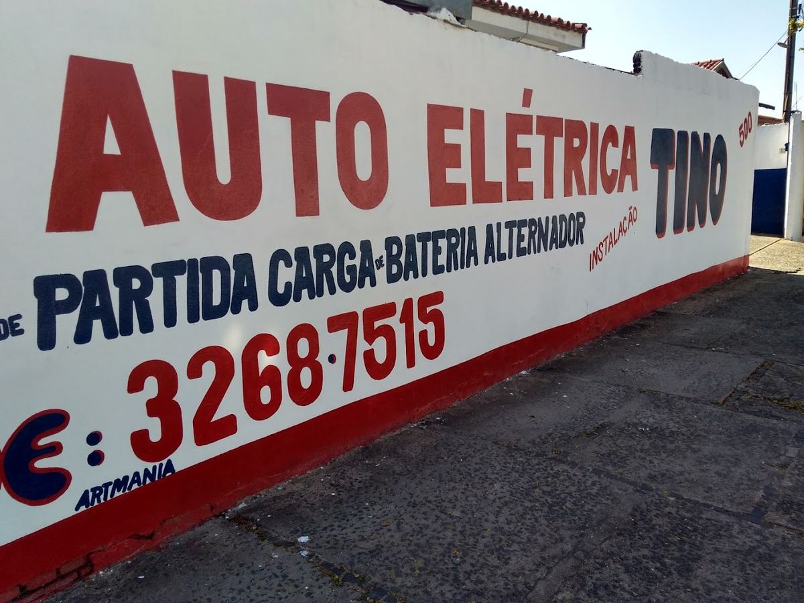
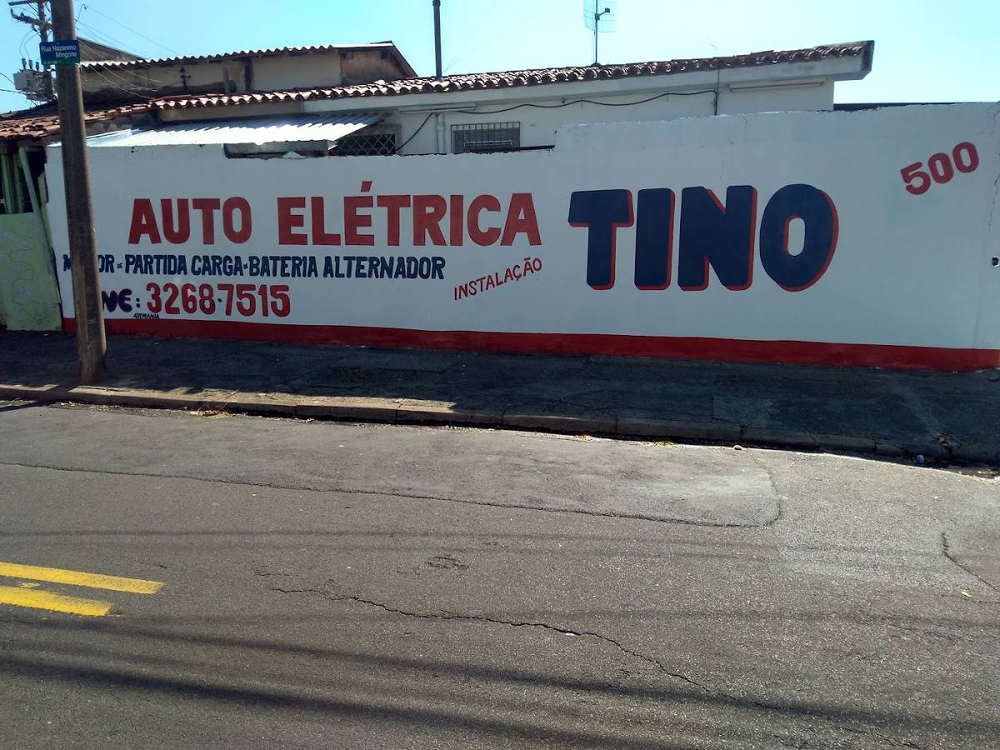

Desde 1993
Carro não pega? Fala com o Tino.
Motor · Partida · Carga · Bateria · Alternador
Auto elétrica no Jardim do Lago desde 1993. Resolve sem enrolação, explica o que o carro tem e cobra preço justo.
4,8 ★ com 153 avaliações no Google

Serviços
O que está no muro (e mais)
Motor de partida
Carro que não dá partida ou faz "tec-tec".
Carga e alternador
Bateria que descarrega e luz da bateria acesa.
Bateria
Teste e troca.
Ventoinha
Ventoinha que não liga e motor esquentando.
Elétrica geral
Faróis, lanternas, setas, buzina e fusíveis.
Revisão para vistoria
Deixa a parte elétrica em dia antes da inspeção.
Checklist rápido
O que não está funcionando?
Marque o que você notou no carro. Na ligação, o Tino já sabe por onde começar.
4,8 · 153 avaliações no Google
"Honesto" é a palavra mais usada
"Indiscutível melhor auto elétrica da região, o cara é ninja e gente boa demais."Resumo das avaliações · Google
"Excelente profissional, educado, honesto e preço justo, podem ir sem medo."Isabella · Google
"Resolve os problemas eletrônicos veiculares sem enrolação e com custo acessível."Resumo das avaliações · Google

Onde fica
Procure o muro branco
| Segunda a sexta | 8h às 18h |
| Sábado e domingo | Fechado |
R. Nazareno Mingone, 500 · Jardim do Lago · Campinas (SP)
Telefone (19) 3268-7515